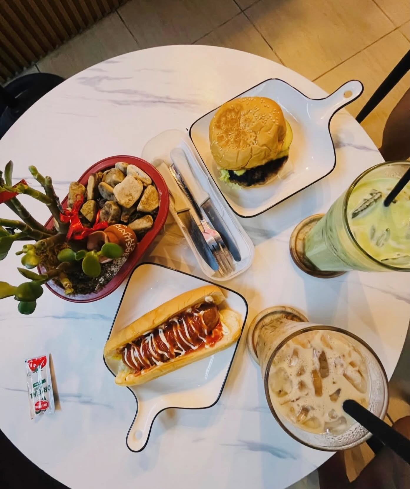

OUR LITTLE CORNER OF THE WORLD
☼
The NAMI feeling
Come for the coffee.
Stay for the feeling.
NAMI is a warm place to slow down, catch up, and make an ordinary day feel a little more special. Every cup is an invitation to linger — whether you’re starting the morning, meeting a friend, or simply taking five.
nami — brewing more than coffee